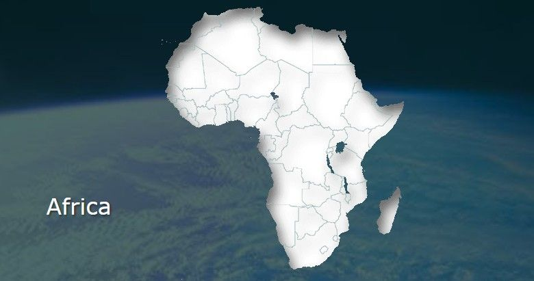

Africa - Toto
verse
Hear the drums echoing tonight
But she hears only whispers of some quiet conversation
do do do do do do doo
She's comin' in, 12:30 flight
Her moonlit wings reflect the stars that guide me towards salvation
do do do dodo do do
I stopped an old man along the way
Hopin' to find some old forgotten words or ancient melodies
do do do dodo do doo
He turned to me as if to say
"Hurry, boy, it's waiting there for you"
chorus
- It's gonna take a lot to drag me away from you
- There's nothin' that a hundred men or more could ever do
- I bless the rains down in Africa
- Gonna take some time to do the things we never had, ooh-hoo
verse
The wild dogs cry out in the night
As they grow restless longing for some solitary company
I know that I must do what's right
Sure as Kilimanjaro rises like Olympus above the Serengeti

I seek to cure what's deep inside
Frightened of this thing that I've become
bridge
Hurry, boy, she's waiting there for you
chorus
- It's gonna take a lot to drag me away from you
- There's nothin' that a hundred men or more could ever do
- I bless the rains down in Africa

- Gonna take some time to do the things we never had, ooh-hoo
outro
I bless the rains down in Africa (I bless the rains)
I bless the rains down in Africa
I bless the rains down in Africa (ooh, I'm gonna take the time)
Gonna take some time to do the things we never had, ooh-hoo